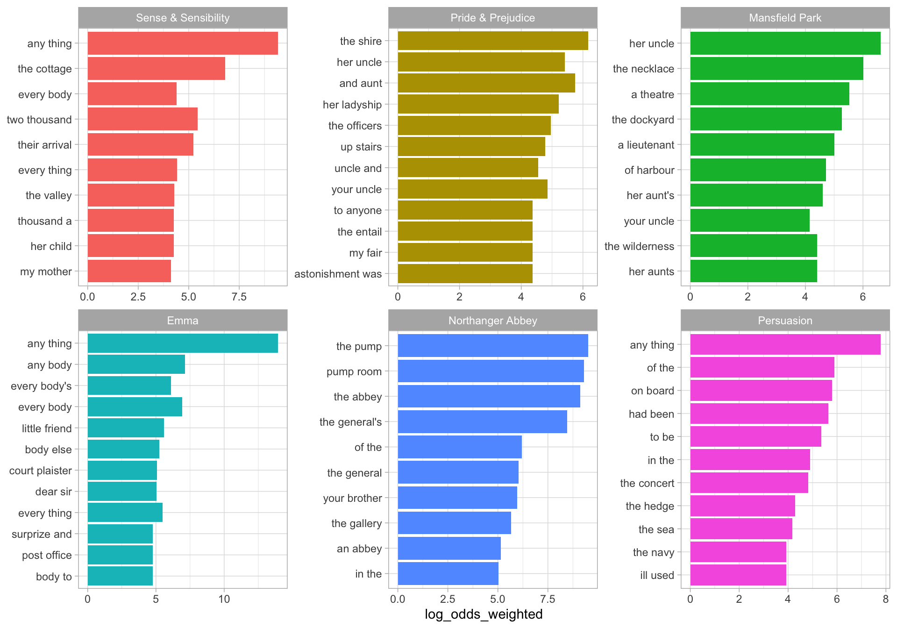

vignettes/tidy_log_odds.Rmd
tidy_log_odds.RmdThere are multiple ways to measure which words (or bigrams, or other units of text) are important in a text. You can count words, or measure tf-idf. This package implements a different approach for measuring which words are important to a text, a weighted log odds.
A log odds ratio is a way of expressing probabilities, and we can weight a log odds ratio so that our implementation does a better job dealing with different combinations of words and documents having different counts. In particular, we use the method outlined in Monroe, Colaresi, and Quinn (2008) for posterior log odds ratios, assuming a multinomial model with a Dirichlet prior. The default prior is estimated from the data itself, an empirical Bayesian approach, but an uninformative prior is also available.
What does this mean? It means that by weighting using empirical Bayes estimation, we take into account the sampling error in our measurements and acknowledge that we are more certain when we’ve counted something a lot of times and less certain when we’ve counted something only a few times. When weighting by a prior in this way, we focus on differences that are more likely to be real, given the evidence that we have.
Let’s look at just such an example.
Let’s explore the six published, completed novels of Jane Austen and use the tidytext package to count up the bigrams (sequences of two adjacent words) in each novel, focusing on bigrams that include no upper case letters. (We can look at differences other than those involving proper nouns this way.) This weighted log odds approach would work equally well for single words, or other kinds of n-grams.
library(dplyr) library(janeaustenr) library(tidytext) library(stringr) tidy_bigrams <- austen_books() %>% unnest_tokens(bigram, text, token="ngrams", n = 2, to_lower = FALSE) %>% filter(!str_detect(bigram, "[A-Z]")) bigram_counts <- tidy_bigrams %>% count(book, bigram, sort = TRUE) bigram_counts #> # A tibble: 274,583 x 3 #> book bigram n #> <fct> <chr> <int> #> 1 Mansfield Park of the 744 #> 2 Mansfield Park to be 613 #> 3 Emma to be 595 #> 4 Mansfield Park in the 564 #> 5 Emma of the 557 #> 6 Pride & Prejudice of the 462 #> 7 Pride & Prejudice to be 437 #> 8 Emma in the 434 #> 9 Sense & Sensibility of the 430 #> 10 Sense & Sensibility to be 428 #> # … with 274,573 more rows
Notice that we haven’t removed stop words, or filtered out rarely used words. We have done very little pre-processing of this text data.
Now let’s use the bind_log_odds() function from the tidylo package to find the weighted log odds for each bigram. The weighted log odds computed by this function are also z-scores for the log odds; this quantity is useful for comparing frequencies across categories or sets but its relationship to an odds ratio is not straightforward after the weighting.
What are the bigrams with the highest weighted log odds for these books?
library(tidylo) bigram_log_odds <- bigram_counts %>% bind_log_odds(book, bigram, n) bigram_log_odds %>% arrange(-log_odds_weighted) #> # A tibble: 274,583 x 4 #> book bigram n log_odds_weighted #> <fct> <chr> <int> <dbl> #> 1 Emma any thing 164 13.9 #> 2 Northanger Abbey the pump 24 9.51 #> 3 Sense & Sensibility any thing 61 9.42 #> 4 Northanger Abbey pump room 23 9.31 #> 5 Northanger Abbey the abbey 22 9.11 #> 6 Northanger Abbey the general's 19 8.47 #> 7 Persuasion any thing 7 7.78 #> 8 Emma any body 68 7.13 #> 9 Emma every body 73 6.93 #> 10 Sense & Sensibility the cottage 31 6.81 #> # … with 274,573 more rows
The highest log odds bigrams (bigrams more likely to come from each book, compared to the others) involve concepts specific to each novel, such as the pump room in Northanger Abbey and sister/mother figures in Sense & Sensibility. We can make a visualization as well.
library(ggplot2) bigram_log_odds %>% group_by(book) %>% top_n(10) %>% ungroup %>% mutate(bigram = reorder(bigram, log_odds_weighted)) %>% ggplot(aes(bigram, log_odds_weighted, fill = book)) + geom_col(show.legend = FALSE) + facet_wrap(~book, scales = "free") + coord_flip() + labs(x = NULL)

These bigrams have the highest weighted log odds for each book.
The proper names of characters tend to be unique from book to book unless you’re looking at a series like Harry Potter. When it comes identifying words or phrases that are unique to a text, a measure like tf-idf does a good job. But because of the way tf-idf is calculated, it cannot distinguish between words that are used in all texts.
For example, the phrase “had been” is used over 100 times in all six Austen novels. The “idf” in tf-idf stands for “inverse document frequency”. When a word is in all the texts, tf-idf is zero for all of them. In weighted log odds, however, each book has a different value; in this case the weighted log odds ranges from 5.64 in Persuasion (very high) down to -2.51 in Sense & Sensibility (which suggests something about the style or content is suppressing the phrase).
Text analysis is a main motivator for this implementation of weighted log odds, but this is a general approach for measuring how much more likely one feature (any kind of feature, not just a word or bigram) is to be associated than another for some set or group (any kind of set, not just a document or book).
To demonstrate this, let’s look at everybody’s favorite data about cars. What do we know about the relationship between number of gears and engine shape vs?
gear_counts <- mtcars %>% count(vs, gear) gear_counts #> vs gear n #> 1 0 3 12 #> 2 0 4 2 #> 3 0 5 4 #> 4 1 3 3 #> 5 1 4 10 #> 6 1 5 1
Now we can use bind_log_odds() to find the weighted log odds for each number of gears and engine shape. First, let’s use the default empirical Bayes prior. It regularizes the values.
regularized <- gear_counts %>% bind_log_odds(vs, gear, n) regularized #> vs gear n log_odds_weighted #> 1 0 3 12 1.1728347 #> 2 0 4 2 -1.3767516 #> 3 0 5 4 0.4033125 #> 4 1 3 3 -1.1354777 #> 5 1 4 10 1.5661168 #> 6 1 5 1 -0.4362340
For engine shape vs = 0, having three gears has the highest weighted log odds while for engine shape vs = 1, having four gears has the highest weighted log odds. This dataset is small enough that you can look at the count data and see how this is working.
Now, let’s use the uninformative prior, and compare to the unweighted log odds. These log odds will be farther from zero than the regularized estimates.
unregularized <- gear_counts %>% bind_log_odds(vs, gear, n, uninformative = TRUE, unweighted = TRUE) unregularized #> vs gear n log_odds log_odds_weighted #> 1 0 3 12 0.6968169 1.8912729 #> 2 0 4 2 -1.2527630 -1.9691060 #> 3 0 5 4 0.3249262 0.5549172 #> 4 1 3 3 -0.9673459 -1.7407107 #> 5 1 4 10 1.1451323 2.8421436 #> 6 1 5 1 -0.5268260 -0.6570674
Most importantly, you can notice that this approach is useful both in the initial motivating example of text data but also more generally whenever you have counts in some kind of groups or sets and you want to find what feature is more likely to come from a group, compared to the other groups.